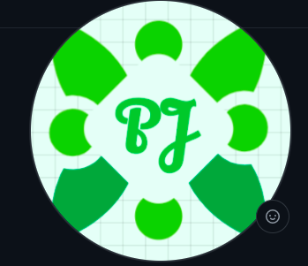

<!DOCTYPE html>
<!-- Import Everything -->
<html lang="en">
	<head>
		<!-- "Stories", "Awards", "Projects" -->
		<title>My Website!</title>

		<meta http-equiv="Content-Type" content="text/html; charset=utf-8"/>
		<meta name="viewport" content="width=device-width, initial-scale=1">

		<link id="wsite-base-style" rel="stylesheet" type="text/css" href="http://cdn2.editmysite.com/css/sites.css?buildTime=1234" />
		<link rel="stylesheet" type="text/css" href="http://cdn2.editmysite.com/css/old/fancybox.css?1234" />
		<link rel="stylesheet" type="text/css" href="http://cdn2.editmysite.com/css/social-icons.css?buildtime=1234" media="screen,projection" />
		<link rel="stylesheet" type="text/css" href="../files/main_style.css?1658960493" title="wsite-theme-css" />
		<link href='http://fonts.googleapis.com/css?family=Quattrocento+Sans:400,700,400italic,700italic&subset=latin,latin-ext' rel='stylesheet' type='text/css' />
		<link href='http://fonts.googleapis.com/css?family=Quattrocento:400,700&subset=latin,latin-ext' rel='stylesheet' type='text/css' />

		<link href='http://fonts.googleapis.com/css?family=Open+Sans:400,300,300italic,700,400italic,700italic&subset=latin,latin-ext' rel='stylesheet' type='text/css' />
		<link href='http://fonts.googleapis.com/css?family=Open+Sans:400,300,300italic,700,400italic,700italic&subset=latin,latin-ext' rel='stylesheet' type='text/css' />
		<script src='https://ajax.googleapis.com/ajax/libs/jquery/1.8.3/jquery.min.js'></script>
	</head>

    	<div class="banner-wrap">
      	<div class="wsite-elements wsite-not-footer wsite-header-elements">
		<div class="wsite-section-wrap">
		<div class="wsite-section wsite-header-section wsite-section-bg-color" style="height: auto;background-color: #1f9a6d;background-image: none;is_customized: 1;" >
		<div class="wsite-section-content">
			
        <div class="container">
          <div class="banner">
				<div class="wsite-section-elements">
					<!-- "My Past Stories", "My Past Accomplishments", "My Past Projects" -->
					<h2 class="wsite-content-title">My Past Projects</h2>
					<div class="paragraph"><span id="date"></span></div>
				</div>
			</div>
        </div>
      
		</div>
		<div class=""></div>
		</div>
		</div>
		</div>

		<script type="text/javascript" src="files/theme/plugins.js"></script>
 		<script type="text/javascript" src="files/theme/custom.js"></script>
    	<div id="customer-accounts-app"></div>
    	<script src="http://cdn2.editmysite.com/js/site/main-customer-accounts-site.js?buildTime=1234"></script>
</html>

<!-- {Notes}
	Remember:
	 * Change image, description, date and title.
	 * Change header colour
	 * Change page name
	 * Change header title
	
	Colours:
	 * (#1f9a6d = Green)
	 * (#5884a7 = Blue)
	 * (#e55441 = Red)
-->

<!-- {Card Description}
	Card Title:
	My Website Just Went Online!
	Card Subtext:
	While having lots of fun during the summer break, I decided to create a website...
-->

<!-- Code -->
<html>
	<div>
		<div class="wsite-image wsite-image-border-thick" style="padding-top:10px;padding-bottom:10px;margin-left:0px;margin-right:0px;text-align:center">
			<span id="image"></span>
		<div>
			<h2 class="wsite-content-title" style="text-align:center;"><span id="title"></span></h2>
			<div class="paragraph" style="text-align:justify;"><span id="desc"></span></div>
		</div>
	</div>

	<!-- Create Space at the Bottom of the Page -->
	<div class="content-wrap">
	<div id="wsite-content" class="wsite-elements wsite-not-footer">
	<div class="wsite-section-wrap">
	<div class="wsite-section wsite-body-section wsite-background-5"  >
	<div class="wsite-section-content">
	<div class="container">
	<div class="wsite-section-elements">
					
	</div>
	</div>
	</div>
	</div>
	</div>
	</div>
</html>

<!-- Preferences -->
<html>
<script>
	let image = '';
	let title = '<font color="#1f9a6d"> My Website Just Went Online! </font>';
	let desc = `· · · (28/07/2022) While having fun during the summer-break, I worked on this project to act as my professional
	website. Originally, I wanted to create it on Weebly due to my familiarity and using the service. 
	However, I soon realised how rigid and buggy it was; I wanted to code simple CSS cards with box-shadows 
	and that took several hours! Thinking through it, I decided to download the website and work on
	it from my MacBook. Looking back, this was definitely the right choice as I learned HTML, was 
	able to get more control over the website, and was able to keep a copy of the website with me.
	To host the website and get a domain, I used GitHub Pages due to it being free, quick to modify, 
	reliable and promotion-free. While this website needs more touch-up like mobile-support or 
	animations, I'm really happy with the current result; I've spent more than 15 hours coding this! 
	I can't wait to fill this with more content and features!&nbsp;`;
	let date = "(28/07/2022)"

	document.getElementById("image").innerHTML = image
	document.getElementById("title").innerHTML = title
	document.getElementById("desc").innerHTML = desc
	document.getElementById("date").innerHTML = date
</script>
</html>